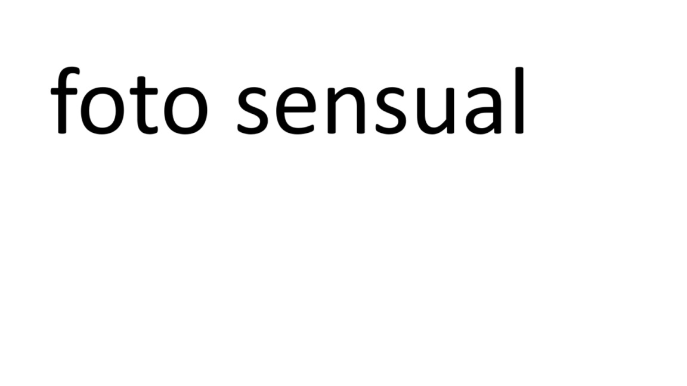

nuestros kinesiologos son graduados de la universidad nacional del nordeste, son titulados de la carrera licenciatura en kinesiologia y fisiatria
nos encargamos de realizar trabajos como tratamientos con maquinarias, especificamente en el area oncologica
trabajamos en la parte de deportologia y masoterapia contamos con una buena capacitacion para realizar trabajos en las distintas areas de la fisioterapia

evaluación, tratamiento y prevención de lesiones en deportistas, además de mejorar su rendimiento a través del movimiento y la rehabilitación. Busca optimizar la función física, corregir patrones de movimiento incorrectos y prevenir futuras lesiones.
utiliza técnicas manuales para manipular los tejidos blandos del cuerpo con fines terapéuticos. Su objetivo principal es aliviar el dolor, reducir la tensión muscular, mejorar la circulación y promover el bienestar general. Se aplica tanto para tratar lesiones y enfermedades como para la prevención y el mantenimiento de la salud.
rehabilitación y cuidado físico de pacientes con cáncer, ayudando a prevenir y tratar las limitaciones funcionales causadas por la enfermedad o sus tratamientos. Su objetivo principal es mejorar la calidad de vida de los pacientes, restaurando o manteniendo su capacidad física y promoviendo la independencia funcional.